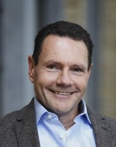

UNIFI@ECTI-CON Tutorial
Smart city communication: M2M standards, applications and platforms
Thomas Magedanz
Abstract
Today the concept of mobile broadband communication is gaining momentum and the related 3GPP specifications are forming the technology foundation for enabling the connectivity for a massive number of devices. This communication opportunity is augmented by the development of new Over-The-Top (OTT) applications either imported from fixed Internet or especially tailored as mobile services. Apart from the user controlled smartphones, tablets, and laptops which are gradually adopted by mobile users, new devices such as sensors and actuators are currently deployed enabling the extension towards efficient remote communication of other business branches such as eHealth, eGovernment, eTransport Smart Grid, and Smart Cities systems.
Smart Cities need a flexible Machine to Machine (M2M) communication infrastructure based on convergent networks that lay the foundation for new applications and their flexible combination. This leads to new possibilities for the use of previously isolated applications and data that are now the basis for new business models. For example, environmental data can be combined with up-to-date values attained from within the building to ensure the more efficient and automatic control of heating and ventilation systems. A uniform M2M communication infrastructure can make those and many other applications possible in both the private and industrial sectors. Horizontal M2M communication systems that serve multiple vertical application domains are foreseen to become the nervous system of the city of the future.
This tutorial will provide an overview of the future mobile networks and the correspondent standards. We will also look at potential application classes such as Over-The-Top (OTT) applications as well as service delivery platforms including the IP Multimedia Subsystem (IMS) especially from the perspective of the deployment of a massive number of M2M devices. Additionally, the ETSI M2M platform standards will be analyzed with respect to architecture, functionality, and interfaces underlining the potential of such convergence platforms.
Finally, we will introduce the Fraunhofer FOKUS / TU Berlin OpenMTC platform, which implements the ETSI M2M standards and is used today as M2M reference platform implementation in various major research projects in the context of the Internet of Things (IoT) and the Future Internet (FI). In addition, the OpenMTC platform is used together with the Fraunhofer OpenIMS and OpenEPC toolkits within the FOKUS FUSECO Playground, enabling industry players, namely network operators, equipment manufacturers, and service providers to prototype various Smart City applications within realistic development and execution environments.

Thomas Magedanz
Thomas Magedanz (PhD) is professor of the chair for Next Generation Networks (AV - Architektur der Vermittlungsknoten in German) in the electrical engineering and computer sciences faculty of the Technische Universität Berlin, Germany, where he is educating masters and PhD students in the fields of multimedia Service Delivery Platform technologies on top of converging fixed and mobile networks, Next Generation Networks, and the Future Internet.
In addition, he leads the Next Generation Network Infrastructures (NGNI) Competence Center at Fraunhofer Institute FOKUS (formerly known as GMD Institute FOKUS) in Berlin, Germany, where he is responsible for the performance of major international R&D co-operations and related projects in the context of next generation telecommunications infrastructures. In this context he is a globally recognized pioneer of the development and delivery of advanced network and service technology testbeds and related software tools in the fields of Next Generation Networks and the emerging Future Internet for both academia and industry. Well known examples include the Open IMS Playground, Open SOA Telco Playground and the Future Seamless Communication Playground (FUSECO-Playground).
Related link
Conference Host

Important Dates
Full paper submission due date:
January 11, 2013 January 31, 2013
Notification of acceptance:
March 15, 2013 March 22,2013
Camera-ready paper submission:
April 2, 2013 April 17,2013
Early-bird registration:
April 2, 2013 April 17,2013
Conference date:
May 15-17, 2013